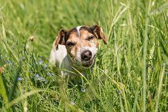

GRASS!

Grass is your dog's favorite vegetables.
They love to eat them uncooked and raw and they constantly look for them on their walks
Ingredients:
Steps:
- Take dog on a walk
- Let dog walk on any landscaping area with grass
- Dog will eat and chew on grass like a cow
- Dog might throw up grass due to upset stomach
- Dog has no regret and shame